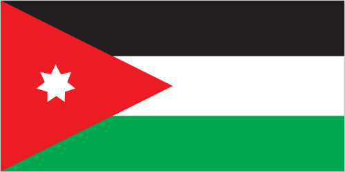

Middle East :: JORDAN
Introduction :: JORDAN
-
Following World War I and the dissolution of the Ottoman Empire, the League of Nations awarded Britain the mandate to govern much of the Middle East. Britain demarcated a semi-autonomous region of Transjordan from Palestine in the early 1920s. The area gained its independence in 1946 and thereafter became The Hashemite Kingdom of Jordan. The country's long-time ruler, King HUSSEIN (1953-99), successfully navigated competing pressures from the major powers (US, USSR, and UK), various Arab states, Israel, and a large internal Palestinian population. Jordan lost the West Bank to Israel in the 1967 Six-Day War. King HUSSEIN in 1988 permanently relinquished Jordanian claims to the West Bank; in 1994 he signed a peace treaty with Israel. King ABDALLAH II, King HUSSEIN's eldest son, assumed the throne following his father's death in 1999. He has implemented modest political and economic reforms, including the passage of a new electoral law in early 2016 ahead of legislative elections held in September. The Islamic Action Front, which is the political arm of the Jordanian Muslim Brotherhood, returned to parliament with 15 seats after boycotting the previous two elections in 2010 and 2013.
Geography :: JORDAN
-
Middle East, northwest of Saudi Arabia, between Israel (to the west) and Iraq31 00 N, 36 00 EMiddle Easttotal: 89,342 sq kmland: 88,802 sq kmwater: 540 sq kmcountry comparison to the world: 112about three-quarters the size of Pennsylvania; slightly smaller than Indianatotal: 1,744 kmborder countries (5): Iraq 179 km, Israel 307 km, Saudi Arabia 731 km, Syria 379 km, West Bank 148 km26 kmterritorial sea: 3 nmmostly arid desert; rainy season in west (November to April)mostly desert plateau in east, highland area in west; Great Rift Valley separates eastern and western banks of the Jordan Rivermean elevation: 812 melevation extremes: lowest point: Dead Sea -408 mhighest point: Jabal Umm ad Dami 1,854 mphosphates, potash, shale oilagricultural land: 11.4%arable land 2%; permanent crops 1%; permanent pasture 8.4%forest: 1.1%other: 87.5% (2011 est.)964 sq km (2012)population heavily concentrated in the west, and particularly the northwest, in and around the capital of Amman; a sizeable, but smaller population is located in the southwest along the shore of the Gulf of Aqabadroughts; periodic earthquakeslimited natural freshwater resources; deforestation; overgrazing; soil erosion; desertificationparty to: Biodiversity, Climate Change, Climate Change-Kyoto Protocol, Desertification, Endangered Species, Hazardous Wastes, Law of the Sea, Marine Dumping, Ozone Layer Protection, Wetlandssigned, but not ratified: none of the selected agreementsstrategic location at the head of the Gulf of Aqaba and as the Arab country that shares the longest border with Israel and the occupied West Bank
People and Society :: JORDAN
-
8,185,384note: increased estimate reflects revised assumptions about the net migration rate due to the increased flow of Syrian refugees (July 2016 est.)country comparison to the world: 97noun: Jordanian(s)adjective: JordanianArab 98%, Circassian 1%, Armenian 1%Arabic (official), English (widely understood among upper and middle classes)Muslim 97.2% (official; predominantly Sunni), Christian 2.2% (majority Greek Orthodox, but some Greek and Roman Catholics, Syrian Orthodox, Coptic Orthodox, Armenian Orthodox, and Protestant denominations), Buddhist 0.4%, Hindu 0.1%, Jewish <0.1, folk religionist <0.1, unaffiliated <0.1, other <0.1 (2010 est.)0-14 years: 35.04% (male 1,470,865/female 1,397,057)15-24 years: 20.12% (male 842,202/female 804,557)25-54 years: 36.44% (male 1,491,855/female 1,491,302)55-64 years: 4.46% (male 177,720/female 187,181)65 years and over: 3.94% (male 151,071/female 171,574) (2016 est.)total dependency ratio: 64.8%youth dependency ratio: 58.5%elderly dependency ratio: 6.2%potential support ratio: 16% (2015 est.)total: 22.3 yearsmale: 21.9 yearsfemale: 22.7 years (2016 est.)country comparison to the world: 1770.83% (2016 est.)country comparison to the world: 13225.5 births/1,000 population (2016 est.)country comparison to the world: 493.8 deaths/1,000 population (2016 est.)country comparison to the world: 211-13.4 migrant(s)/1,000 population (2016 est.)country comparison to the world: 218population heavily concentrated in the west, and particularly the northwest, in and around the capital of Amman; a sizeable, but smaller population is located in the southwest along the shore of the Gulf of Aqabaurban population: 83.7% of total population (2015)rate of urbanization: 3.79% annual rate of change (2010-15 est.)AMMAN (capital) 1.155 million (2015)at birth: 1.06 male(s)/female0-14 years: 1.05 male(s)/female15-24 years: 1.05 male(s)/female25-54 years: 1 male(s)/female55-64 years: 0.95 male(s)/female65 years and over: 0.89 male(s)/femaletotal population: 1.02 male(s)/female (2016 est.)24.7note: median age at first birth among women 25-29 (2012 est.)58 deaths/100,000 live births (2015 est.)country comparison to the world: 97total: 14.7 deaths/1,000 live birthsmale: 15.5 deaths/1,000 live birthsfemale: 13.8 deaths/1,000 live births (2016 est.)country comparison to the world: 104total population: 74.6 yearsmale: 73.2 yearsfemale: 76.1 years (2016 est.)country comparison to the world: 1193.18 children born/woman (2016 est.)country comparison to the world: 5061.2% (2012)7.5% of GDP (2014)country comparison to the world: 252.56 physicians/1,000 population (2010)1.8 beds/1,000 population (2012)improved:urban: 97.8% of populationrural: 92.3% of populationtotal: 96.9% of populationunimproved:urban: 2.2% of populationrural: 7.7% of populationtotal: 3.1% of population (2015 est.)improved:urban: 98.6% of populationrural: 98.9% of populationtotal: 98.6% of populationunimproved:urban: 1.4% of populationrural: 1.1% of populationtotal: 1.4% of population (2015 est.)NANANA28.1% (2014)country comparison to the world: 283% (2012)country comparison to the world: 114NAdefinition: age 15 and over can read and writetotal population: 95.4%male: 97.7%female: 92.9% (2015 est.)total: 13 yearsmale: 12 yearsfemale: 13 years (2012)total: 29.3%male: 25.2%female: 48.8% (2012 est.)country comparison to the world: 27
Government :: JORDAN
-
conventional long form: Hashemite Kingdom of Jordanconventional short form: Jordanlocal long form: Al Mamlakah al Urduniyah al Hashimiyahlocal short form: Al Urdunformer: Transjordanetymology: named for the Jordan River, which makes up part of Jordan's northwest borderparliamentary constitutional monarchyname: Ammangeographic coordinates: 31 57 N, 35 56 Etime difference: UTC+2 (7 hours ahead of Washington, DC, during Standard Time)daylight saving time: +1hr, begins last Friday in March; ends last Friday in October12 governorates (muhafazat, singular - muhafazah); 'Ajlun, Al 'Aqabah, Al Balqa', Al Karak, Al Mafraq, Al'Asimah, At Tafilah, Az Zarqa', Irbid, Jarash, Ma'an, Ma'daba25 May 1946 (from League of Nations mandate under British administration)Independence Day, 25 May (1946)previous 1928 (preindependence); latest initially adopted 28 November 1947, revised and ratified 1 January 1952; amended several times, last in 2016 (2016)mixed system developed from codes instituted by the Ottoman Empire (based on French law), British common law, and Islamic lawhas not submitted an ICJ jurisdiction declaration; accepts ICCt jurisdictioncitizenship by birth: nocitizenship by descent only: the father must be a citizen of Jordandual citizenship recognized: yesresidency requirement for naturalization: 15 yearsCitizenship18 years of age; universalchief of state: King ABDALLAH II (since 7 February 1999); Crown Prince HUSSEIN (born 28 June 1994), eldest son of King ABDALLAH IIhead of government: Prime Minister Hani MULKI (since 1 June 2016)cabinet: Cabinet appointed by the prime minister in consultation with the monarchelections/appointments: the monarchy is hereditary; prime minister appointed by the monarchdescription: bicameral National Assembly or Majlis al-'Umma consists of the Senate, or the House of Notables or Majlis al-Ayan (65 seats; members appointed by the monarch to serve 4-year terms) and the Chamber of Deputies or House of Representatives or Majlis al-Nuwaab (130 seats; 115 members directly elected in single- and multi-seat constituencies by open-list proportional representation vote and 15 seats for women; 12 of the 115 seats reserved for Christian, Chechen, and Circassian candidates; members serve 4-year terms)elections: Chamber of Deputies - last held on 20 September 2016 (next to be held in 2020)election results: Chamber of Deputies - percent of vote by party - NA; seats by party - NAhighest court(s): Court of Cassation or Supreme Court (consists of 15 judges including the chief justice; 7-judge panels for important cases and 5 judge panels for most appeals cases); Constitutional Court (consists of 9 members including the court chairman)judge selection and term of office: Supreme Court chief justice appointed by the king; other judges nominated by the Judicial Council, an 11-member judicial policy-making body consisting of high-level judicial officials and judges, and approved by the king; judge tenure NA; Constitutional Court members appointed by the king for 6-year non-renewable terms with one-third of the membership renewed every 2 yearssubordinate courts: Courts of Appeal; Major Felonies Court; Courts of First Instance; Magistrate Courts; religious courts; state security courtsAhl al-HimmaAl-BayyanAl-Hayah Jordanian Party [Zahier AMR]Arab Ba'ath Socialist Party [Akram al-HIMSI]Ba'ath Arab Progressive Party [Fuad DABBOUR]CitizenshipConstructionCooperationDawnDemocratic People's Party [Ablah ABU ULBAH]Democratic Popular Unity Party [Sa'id DIAB]DignityDu'a Party [Muhammed ABU BAKR]Free VoiceIslamic Action Front or IAF [Hamzah MANSOUR]Islamic Centrist Party [Muhammad al-HAJ]Jordanian Communist Party [Munir HAMARNAH]Jordanian National Party [Muna ABU BAKR]Jordanian United Front [Amjad al-MAJALI]Labor and TradeMuslim Center Party [Haitham ALAMAERAH]NationNational Congress Party [Raheeh GHARAYBEH, general secretary]National Accord Youth BlockNational ActionNational Constitution Party [Ahmad al-SHUNAQ]National Current Party [Abd al-Hadi al-MAJALI]National Movement for Direct Democracy [Muhammad al-QAQ]National UnionNational UnityNobel JerusalemRisalah Party [Hazem QASHOU]SalvationStronger JordanThe Direct Democratic Nationalists Movement Party [Nash'at KHALIFAH]The Homeland (Hizb Al-Watan)The PeopleUnified FrontUnited FrontVoice of the Nation; qtgan15 April Movement [Mohammad SUNEID, chairman]24 March Movement [Mu'az al-KHAWALIDAH, Abdel Rahman HASANEIN, spokespersons]1952 Constitution MovementAnti-Normalization Committee [Hamzah MANSOUR, chairman]Economic and Social Association of Retired Servicemen and Veterans or ESARSV [Abdulsalam al-HASSANAT, chairman]Group of 36Higher Coordination Committee of Opposition Parties [Said DIAB]Higher National Committee for Military Retirees or HNCMR [Ali al-HABASHNEH, chairman]HirakJordan Bar Association [Saleh al-ARMUTI, chairman]Jordanian Campaign for Change or JayinJordanian Muslim Brotherhood [Dr. Hamam SAID, controller general]Jordanian Press Association [Sayf al-SHARIF, president]National Front for Reform or NFR [Ahmad OBEIDAT, chairman]Popular Gathering for ReformProfessional Associations Council [Abd al-Hadi al-FALAHAT, chairman]Sons of JordanABEDA, AFESD, AMF, CAEU, CD, CICA, EBRD, FAO, G-11, G-77, IAEA, IBRD, ICAO, ICC (national committees), ICCt, ICRM, IDA, IDB, IFAD, IFC, IFRCS, ILO, IMF, IMO, IMSO, Interpol, IOC, IOM, IPU, ISO, ITSO, ITU, ITUC (NGOs), LAS, MIGA, MINUSTAH, MINUSMA, MONUSCO, NAM, OIC, OPCW, OSCE (partner), PCA, UN, UN Security Council (temporary), UNAMID, UNCTAD, UNESCO, UNHCR, UNIDO, UNMIL, UNMISS, UNOCI, UNRWA, UNWTO, UPU, WCO, WFTU (NGOs), WHO, WIPO, WMO, WTOchief of mission: Ambassador Dina Khalil Tawiq KAWAR (since 27 June 2016)chancery: 3504 International Drive NW, Washington, DC 20008telephone: [1] (202) 966-2664FAX: [1] (202) 966-3110chief of mission: Ambassador Alice G. WELLS (since 31 August 2014)embassy: Abdoun, Al-Umawyeen St., Ammanmailing address: P. O. Box 354, Amman 11118 Jordan; Unit 70200, Box 5, DPO AE 09892-0200telephone: [962] (6) 590-6000FAX: [962] (6) 592-0163three equal horizontal bands of black (top), representing the Abbassid Caliphate, white, representing the Ummayyad Caliphate, and green, representing the Fatimid Caliphate; a red isosceles triangle on the hoist side, representing the Great Arab Revolt of 1916, and bearing a small white seven-pointed star symbolizing the seven verses of the opening Sura (Al-Fatiha) of the Holy Koran; the seven points on the star represent faith in One God, humanity, national spirit, humility, social justice, virtue, and aspirations; design is based on the Arab Revolt flag of World War Ieagle; national colors: black, white, green, redname: "As-salam al-malaki al-urdoni" (Long Live the King of Jordan)lyrics/music: Abdul-Mone'm al-RIFAI'/Abdul-Qader al-TANEERnote: adopted 1946; the shortened version of the anthem is used most commonly, while the full version is reserved for special occasions
Economy :: JORDAN
-
Jordan's economy is among the smallest in the Middle East, with insufficient supplies of water, oil, and other natural resources, underlying the government's heavy reliance on foreign assistance. Other economic challenges for the government include chronic high rates of poverty, unemployment and underemployment, budget and current account deficits, and government debt.King ABDALLAH, during the first decade of the 2000s, implemented significant economic reforms, such as expanding foreign trade and privatizing state-owned companies that attracted foreign investment and contributed to average annual economic growth of 8% for 2004 through 2008. The global economic slowdown and regional turmoil contributed to slower growth from 2010 to 2014 - with growth averaging 2.8% per year - and hurt export-oriented sectors, construction, and tourism. Through 2014, Jordan's finances were strained by a series of natural gas pipeline attacks in Egypt, disrupting natural gas exports to Jordan, and led Jordan to rely on more expensive diesel imports, primarily from Saudi Arabia, to generate electricity.To diversify its energy mix, Jordan has secured several contracts for liquefied natural gas and is currently exploring nuclear power generation, exploitation of abundant oil shale reserves and renewable technologies, as well as the import of Israeli offshore gas. In August 2015, Jordan completed a $2.1 billion, three-year IMF Stand-By Arrangement, which the government had entered to help correct budgetary and balance of payments imbalances. Jordan plans to expand on its fiscal reform measures enacted over the previous few years with a follow-on IMF agreement in 2016 to boost government revenues, reduce the budget deficit, and manage its burgeoning debt, brought on in part by an influx of over 650,000 Syrian refugees since 2011, which put additional pressure on expenditures.$82.73 billion (2015 est.)$80.71 billion (2014 est.)$78.28 billion (2013 est.)note: data are in 2015 US dollarscountry comparison to the world: 89$37.62 billion (2015 est.)2.5% (2015 est.)3.1% (2014 est.)2.8% (2013 est.)country comparison to the world: 125$12,100 (2015 est.)$12,100 (2014 est.)$12,000 (2013 est.)note: data are in 2015 US dollarscountry comparison to the world: 13415.8% of GDP (2015 est.)18.3% of GDP (2014 est.)16.8% of GDP (2013 est.)country comparison to the world: 155household consumption: 82%government consumption: 19.8%investment in fixed capital: 22.5%investment in inventories: 2.3%exports of goods and services: 35.6%imports of goods and services: -62.2% (2015 est.)agriculture: 4.2%industry: 29.6%services: 66.2% (2015 est.)citrus, tomatoes, cucumbers, olives, strawberries, stone fruits; sheep, poultry, dairytourism, information technology, clothing, fertilizers, potash, phosphate mining, pharmaceuticals, petroleum refining, cement, inorganic chemicals, light manufacturing2.2% (2015 est.)country comparison to the world: 942.055 million (2015 est.)country comparison to the world: 122agriculture: 2%industry: 20%services: 78% (2013 est.)13.1% (2015 est.)11.9% (2014 est.)note: official rate; unofficial rate is approximately 30%country comparison to the world: 14414.2% (2002 est.)lowest 10%: 3.4%highest 10%: 28.7% (2010 est.)39.7 (2007)36.4 (1997)country comparison to the world: 64revenues: $8.324 billionexpenditures: $10.88 billion (2015 est.)22.1% of GDP (2015 est.)country comparison to the world: 143-6.8% of GDP (2015 est.)country comparison to the world: 18985.5% of GDP (2015 est.)80.8% of GDP (2014 est.)note: data cover central government debt and include debt instruments issued (or owned) by government entities other than the treasury, and treasury debt held by foreign entities; the data exclude debt issued by subnational entities, as well as intra-governmental debt; intra-governmental debt consists of treasury borrowings from surpluses in the social funds, such as for retirement, medical care, and unemployment; debt instruments for the social funds are not sold at public auctionscountry comparison to the world: 26calendar year-0.9% (2015 est.)2.9% (2014 est.)country comparison to the world: 220.3% (31 December 2010)4.75% (31 December 2009)country comparison to the world: 1318.24% (31 December 2015 est.)8.84% (31 December 2014 est.)country comparison to the world: 102$13.92 billion (31 December 2015 est.)$13 billion (31 December 2014 est.)country comparison to the world: 71$43.64 billion (31 December 2015 est.)$41.18 billion (31 December 2014 est.)country comparison to the world: 71$39.57 billion (31 December 2015 est.)$38.04 billion (31 December 2014 est.)country comparison to the world: 69$27 billion (31 December 2015 est.)$27.18 billion (31 December 2014 est.)$30.86 billion (31 December 2013 est.)country comparison to the world: 63-$3.299 billion (2015 est.)-$2.362 billion (2014 est.)country comparison to the world: 162$7.829 billion (2015 est.)$8.385 billion (2014 est.)country comparison to the world: 99textiles, fertilizers, potash, phosphates, vegetables, pharmaceuticalsUS 21%, Saudi Arabia 16.5%, Iraq 10.3%, India 8.7%, UAE 4.8%, Kuwait 4.4% (2015)$18.04 billion (2015 est.)$20.35 billion (2014 est.)country comparison to the world: 77crude oil, refined petroleum products, machinery, transport equipment, iron, cerealsSaudi Arabia 15.4%, China 12.8%, US 6.2%, Germany 4.7%, UAE 4.2% (2015)$16.57 billion (31 December 2015 est.)$16.04 billion (31 December 2014 est.)country comparison to the world: 62$25.16 billion (31 December 2015 est.)$24.26 billion (31 December 2014 est.)country comparison to the world: 82$29.96 billion (31 December 2015 est.)$28.71 billion (31 December 2014 est.)country comparison to the world: 68$609.3 million (31 December 2015 est.)$608.3 million (31 December 2014 est.)country comparison to the world: 85Jordanian dinars (JOD) per US dollar -0.71 (2015 est.)0.71 (2014 est.)0.71 (2013 est.)0.709 (2012 est.)0.709 (2011 est.)
Energy :: JORDAN
-
population without electricity: 40,926electrification - total population: 99.5%electrification - urban areas: 99%electrification - rural areas: 99.4% (2012)17 billion kWh (2014 est.)country comparison to the world: 8316 billion kWh (2014 est.)country comparison to the world: 7964 million kWh (2014 est.)country comparison to the world: 83400 million kWh (2014 est.)country comparison to the world: 814.2 million kW (2014 est.)country comparison to the world: 9299.6% of total installed capacity (2013 est.)country comparison to the world: 440% of total installed capacity (2013 est.)country comparison to the world: 1170.3% of total installed capacity (2013 est.)country comparison to the world: 1480.1% of total installed capacity (2013 est.)country comparison to the world: 12322 bbl/day (2015 est.)country comparison to the world: 1000 bbl/day (2013 est.)country comparison to the world: 14362,220 bbl/day (2013 est.)country comparison to the world: 531 million bbl (1 January 2016 es)country comparison to the world: 9867,760 bbl/day (2013 est.)country comparison to the world: 79146,000 bbl/day (2014 est.)country comparison to the world: 700 bbl/day (2013 est.)country comparison to the world: 19170,890 bbl/day (2013 est.)country comparison to the world: 64199 million cu m (2014 est.)country comparison to the world: 81499 million cu m (2014 est.)country comparison to the world: 900 cu m (2013 est.)country comparison to the world: 124300 million cu m (2014 est.)country comparison to the world: 606.031 billion cu m (1 January 2016 es)country comparison to the world: 8819 million Mt (2013 est.)country comparison to the world: 86
Communications :: JORDAN
-
total subscriptions: 368,938subscriptions per 100 inhabitants: 5 (July 2015 est.)country comparison to the world: 107total: 13.798 millionsubscriptions per 100 inhabitants: 170 (July 2015 est.)country comparison to the world: 81general assessment: service has improved recently with increased use of digital switching equipment; microwave radio relay transmission and coaxial and fiber-optic cable are employed on trunk lines; growing mobile-cellular usage in both urban and rural areas is reducing use of fixed-line servicesdomestic: 1995 telecommunications law opened all non-fixed-line services to private competition; in 2005, monopoly over fixed-line services terminated and the entire telecommunications sector was opened to competition; currently multiple mobile-cellular providers with subscribership up to 170 per 100 personsinternational: country code - 962; landing point for the Fiber-Optic Link Around the Globe (FLAG) FEA and FLAG Falcon submarine cable networks; satellite earth stations - 33 (3 Intelsat, 1 Arabsat, and 29 land and maritime Inmarsat terminals); fiber-optic cable to Saudi Arabia and microwave radio relay link with Egypt and Syria; participant in Medarabtel (2015)radio and TV dominated by the government-owned Jordan Radio and Television Corporation (JRTV) that operates a main network, a sports network, a film network, and a satellite channel; first independent TV broadcaster aired in 2007; international satellite TV and Israeli and Syrian TV broadcasts are available; roughly 30 radio stations with JRTV operating the main government-owned station; transmissions of multiple international radio broadcasters are available (2007).jototal: 4.335 millionpercent of population: 53.4% (July 2015 est.)country comparison to the world: 82
Transportation :: JORDAN
-
number of registered air carriers: 7inventory of registered aircraft operated by air carriers: 40annual passenger traffic on registered air carriers: 3,065,145annual freight traffic on registered air carriers: 169.105 million mt-km (2015)JY (2016)18 (2013)country comparison to the world: 140total: 16over 3,047 m: 82,438 to 3,047 m: 51,524 to 2,437 m: 2914 to 1,523 m: 1 (2013)total: 2under 914 m: 2 (2013)1 (2012)gas 473 km; oil 49 km (2013)total: 507 kmnarrow gauge: 507 km 1.050-m gauge (2008)country comparison to the world: 114total: 7,203 kmpaved: 7,203 km (2011)country comparison to the world: 144total: 12by type: cargo 4, passenger/cargo 6, petroleum tanker 1, roll on/roll off 1foreign-owned: 2 (UAE 2)registered in other countries: 16 (Bahamas 2, Egypt 2, Indonesia 1, Panama 11) (2010)country comparison to the world: 106major seaport(s): Al 'Aqabah
Military and Security :: JORDAN
-
Jordanian Armed Forces (JAF): Royal Jordanian Land Force (RJLF), Royal Jordanian Navy, Royal Jordanian Air Force (Al-Quwwat al-Jawwiya al-Malakiya al-Urduniya, RJAF), Special Operations Command (Socom); Public Security Directorate (normally falls under Ministry of Interior, but comes under JAF in wartime or crisis) (2013)17 years of age for voluntary male military service; initial service term 2 years, with option to reenlist for 18 years; conscription at age 18 suspended in 1999; women not subject to conscription, but can volunteer to serve in noncombat military positions in the Royal Jordanian Arab Army Women's Corps and RJAF (2013)4.65% of GDP (2012)4.64% of GDP (2011)4.65% of GDP (2010)country comparison to the world: 7
Transnational Issues :: JORDAN
-
2004 Agreement settles border dispute with Syria pending demarcationrefugees (country of origin): 2,117,361 (Palestinian refugees) (2015); 655,675 (Syria); 59,196 (Iraq) (2016)